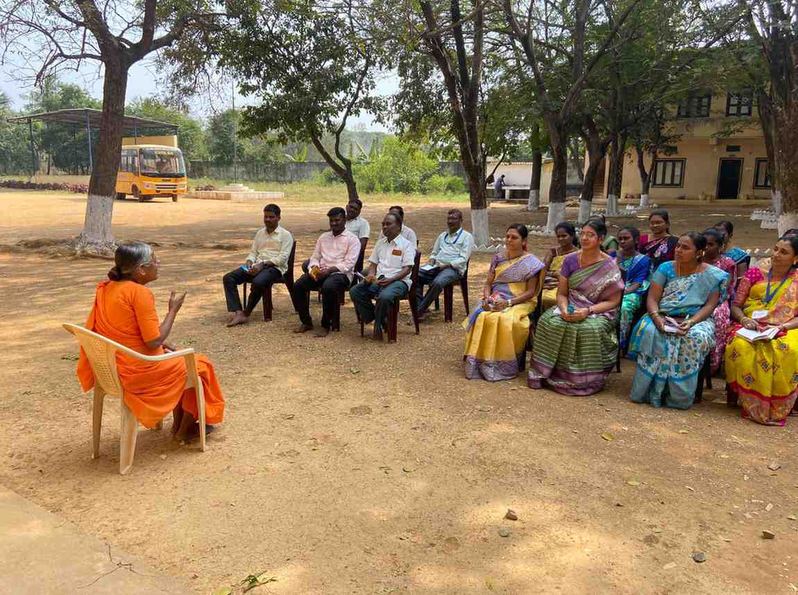
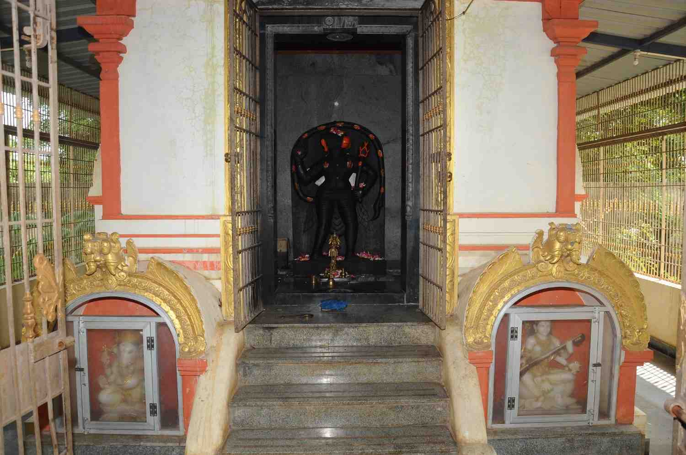
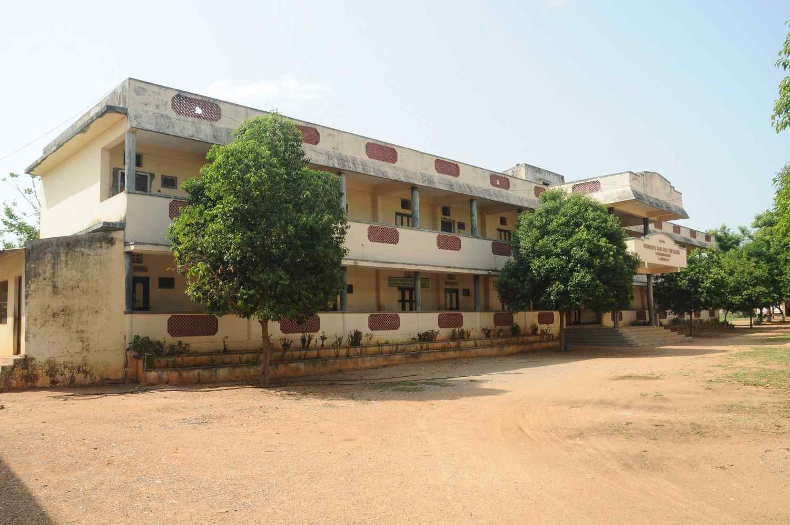
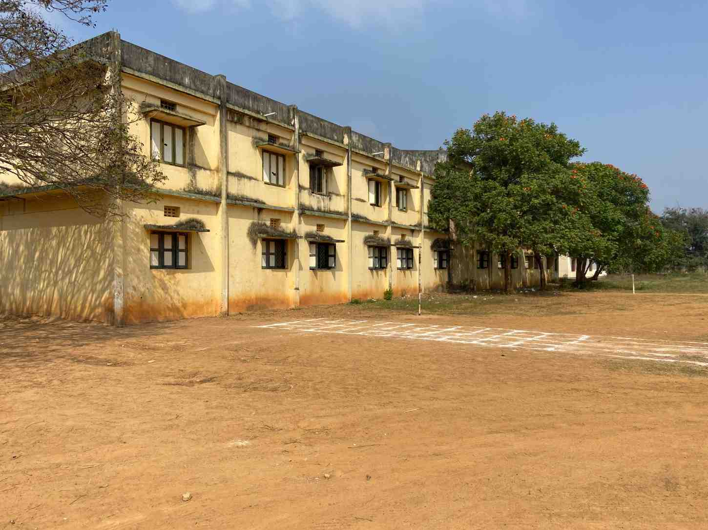
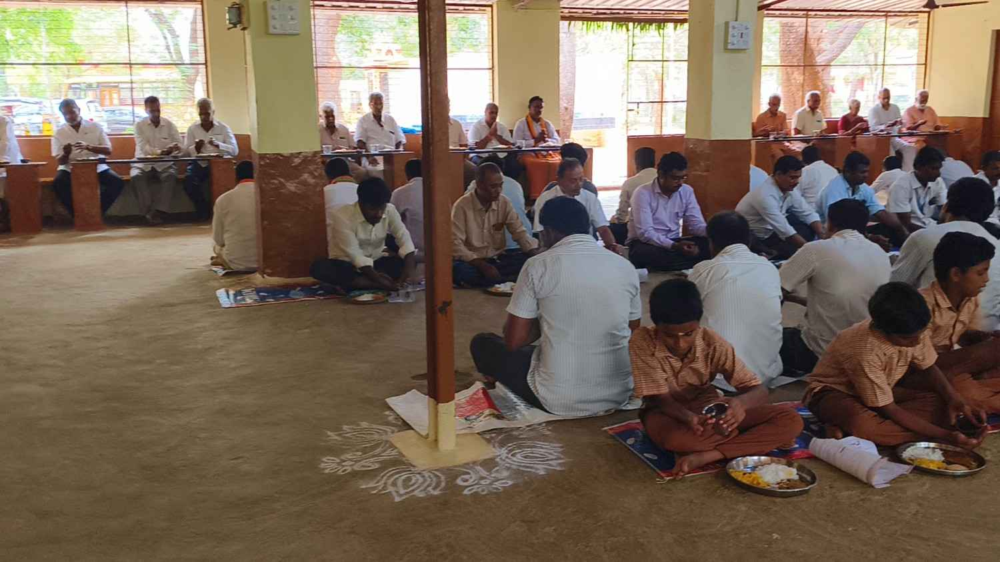
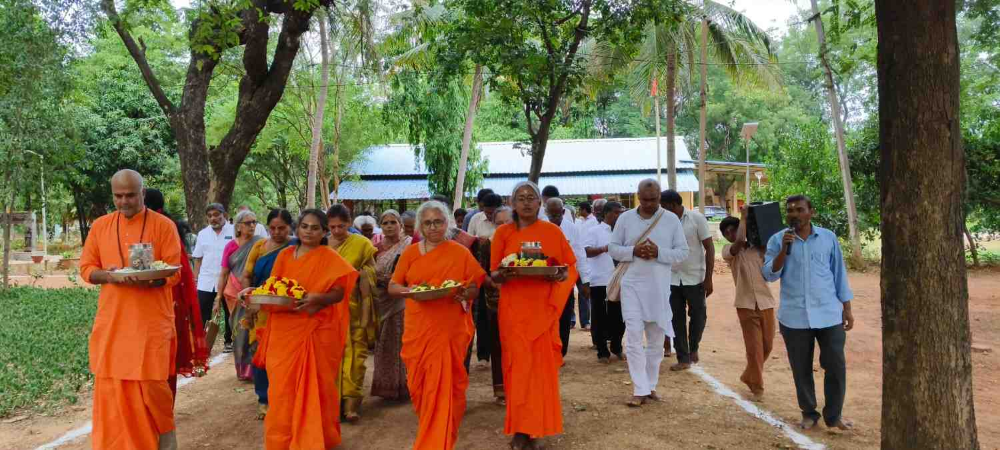
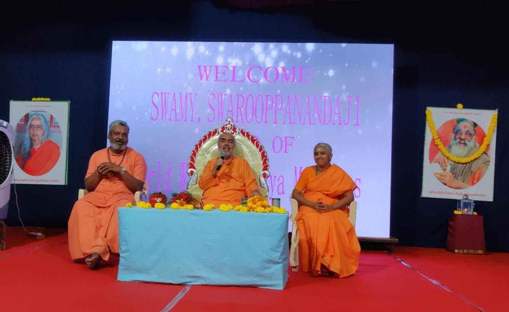

Welcome to Chinmayaranyam
Nestled in the serene environs near the sacred Tirupati hills, Chinmayaranyam was established and developed by Pujya Shri Mataji Sarada Priyananda under the umbrella of Chinmaya Mission. This hallowed ashram is dedicated to the propagation of Vedantic knowledge, nurturing young minds through education, and serving humanity through various seva activities.
From daily poojas and Jnana Yagnas to Bala Vihar, Chinmaya Yuva Kendra (CHYK), and Annadanam — every activity at Chinmayaranyam is a source of great inspiration for spiritual seekers.
Learn MoreWhat We Do
• • •
Ashramam
Daily poojas, bhajans, Gita Parayanam, festivals, and spiritual discourses nurturing devotion and inner growth.
Explore
Harihara Vidyalaya
Harihara Vidyalaya nurtures young minds with value-based education, academics, and holistic development.
Explore
Bala Vihar & CHYK
Bala Vihar for children (5–18 yrs) and Chinmaya Yuva Kendra for youth (18–30 yrs) — nurturing values and dynamic spirituality.
ExploreUpcoming Events
• • •Maha Shivaratri Celebrations
All-night vigil with special poojas, abhishekam, bhajans, and spiritual discourses at the Ashramam temple.
Sri Rama Navami
Grand celebrations marking the birth of Lord Rama with Sundara Kanda Parayanam, cultural programs, and prasad distribution.
Gurudev Jayanti
Celebrating the birth anniversary of Pujya Gurudev Swami Chinmayananda with special satsangs and community service.
Gallery
• • •




Support the Sacred Mission
Your generous contributions enable us to continue our spiritual activities, Annadanam, educational support, and welfare programs. Every offering is a step towards divine service.
Contribute Now